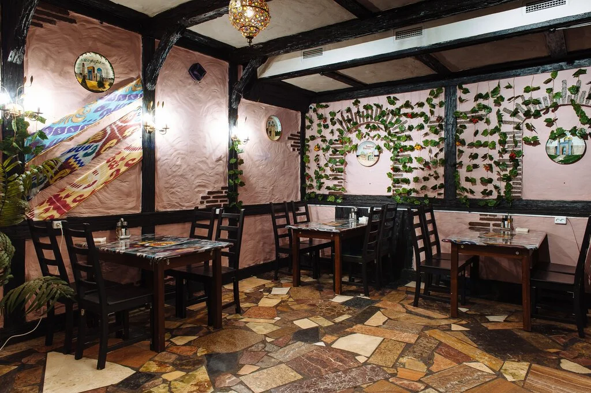
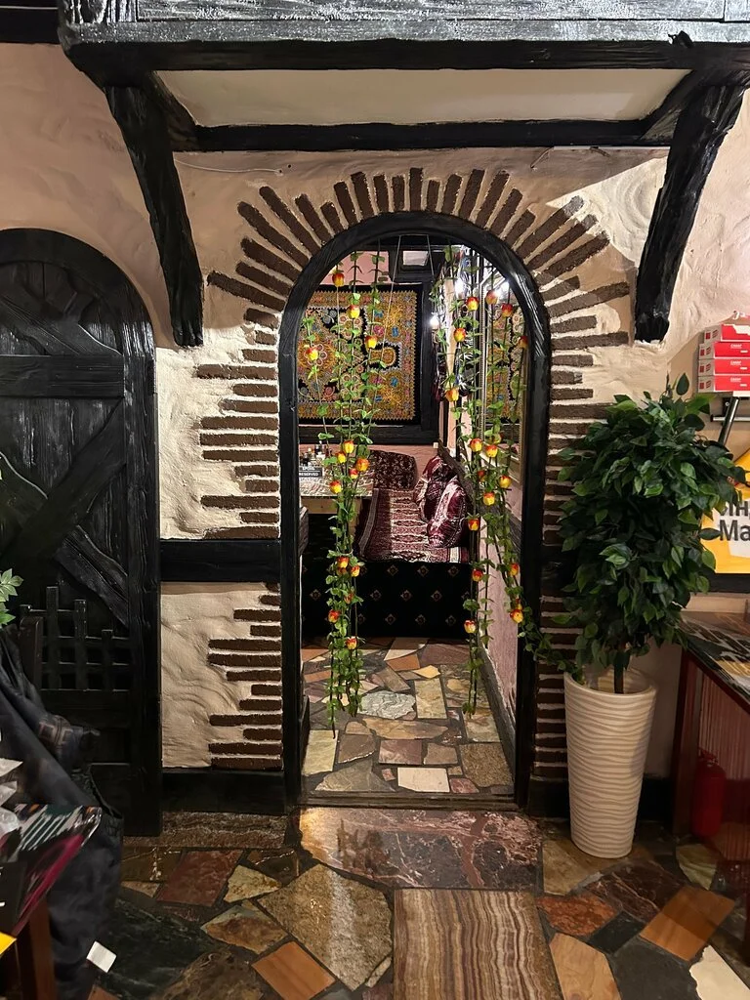
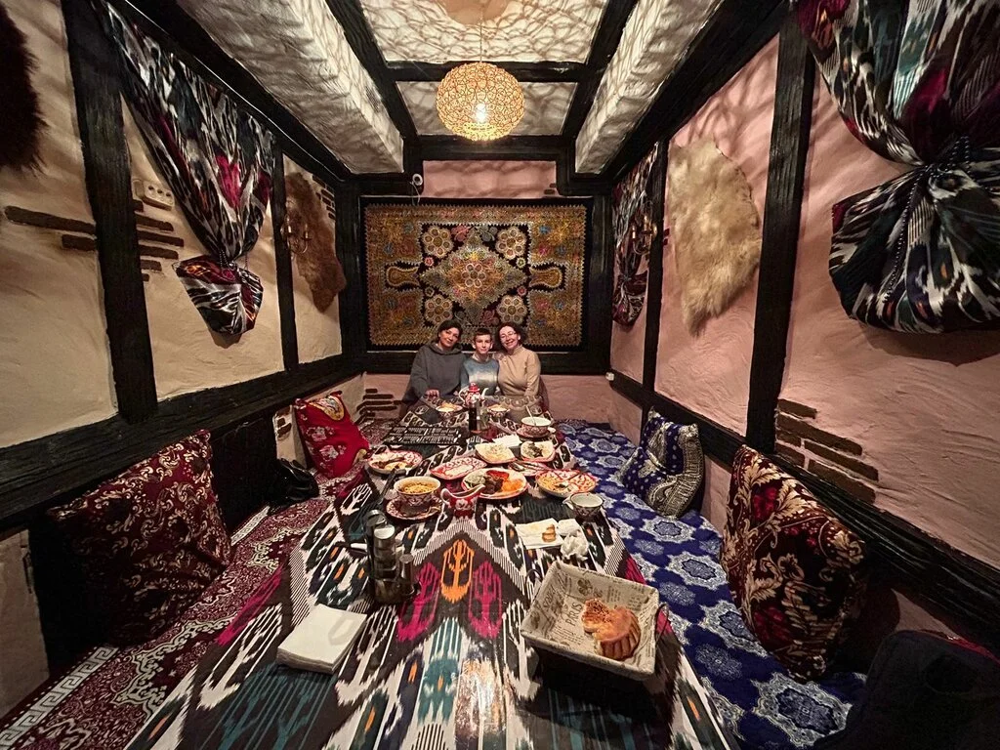
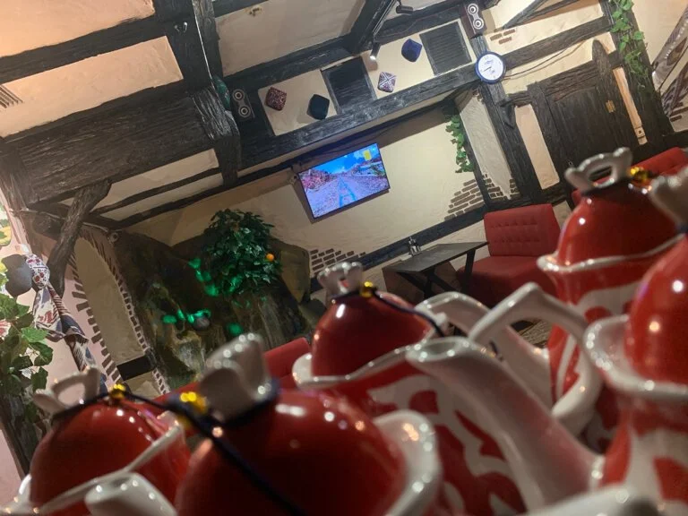

Шашлык
Блюда с мангала — к семейному ужину или встрече с друзьями.
Чай, восточная кухня и стол для своих. Место для неспешного обеда и вечера в хорошей компании.

Чайхана на Тарханской
Деревянные балки, узорчатые ткани и тёплый свет. В зале можно собраться компанией или устроиться за небольшим столом.
Для праздника и большой встречи заранее уточните свободные места по телефону.
+7 (962) 900-22-77 ↗Восточная кухня для обеда и общего стола.
Блюда указаны по публичным материалам заведения. Актуальные состав, наличие и цены уточняйте по телефону. Полное меню будет добавлено после согласования с владельцем.


«Очень вкусное место шашлык манты самса Уютно и цены не кусают»
Саид Азимов · 3 сентября · Отзыв в Яндекс Картах
Москва, Тарханская улица, 2
Часы работы уточняйте перед визитом.
Попробуйте, как может выглядеть бронирование на вашем сайте.
Это демонстрация. Для настоящей брони позвоните в чайхану.